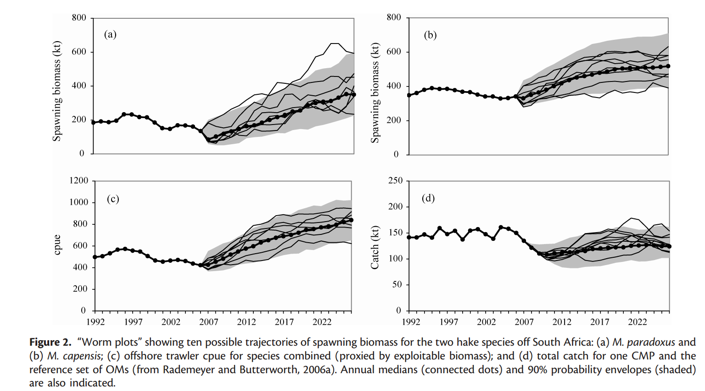
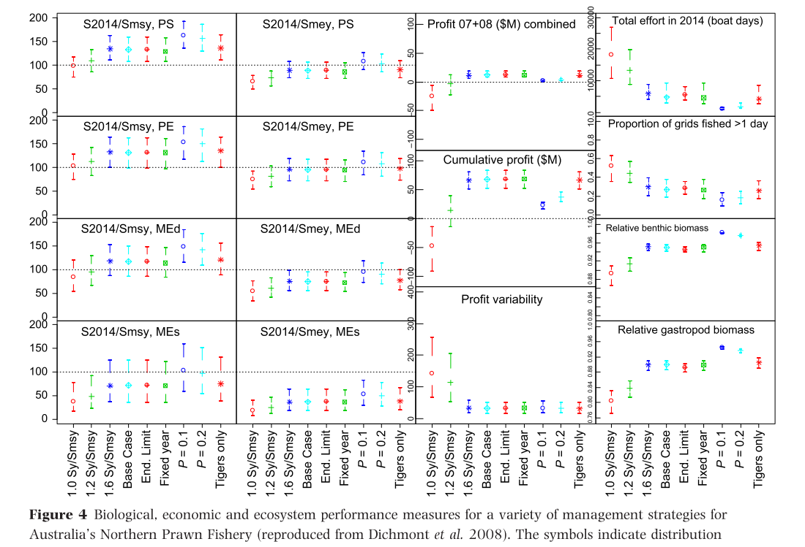
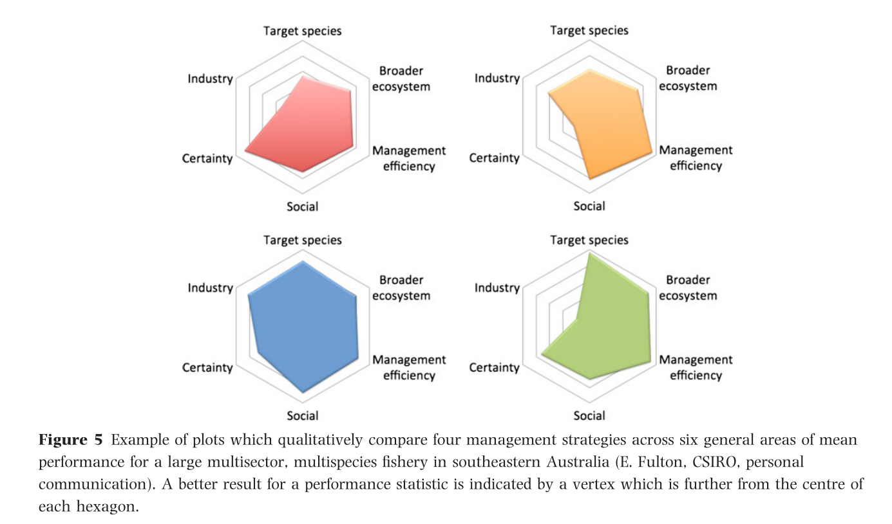
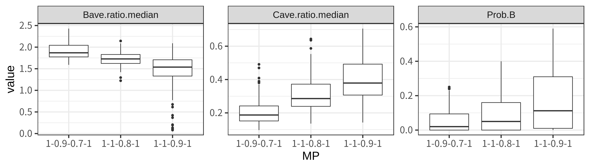

市野川桃子
2019/10/09
データをもとにした統計モデルにおけるパラメータ推定・資源動態モデルを用いた資源量推定
データを最も良く説明できるモデルを得た！
モデルのより応用的な利用： 管理戦略評価（Management Strategy Evaluation, MSE）
モデルの「不確実性」：このような場面は（特に水産資源解析においては）往々にしてある
管理のために、何がしかのパラメータ推定値（例：MSY管理基準値）を利用したい。しかし、その推定値には大きな不確実性が含まれる/さまざまな対立仮説があって選べない、、、。MSEはそのような状況を打開するために開発された方法。
# 水深別の魚のCPUEを調査 Depth <- c(10,4,8,12,3,5,15,13,10,14) log_CPUE <- c(1.3,0.4,1,1.1,0.2,0.35,2.1,2.2,1.5,1.3) # パラメータを推定する lres <- lm(log_CPUE~Depth) lres$coeff # (Intercept) Depth # -0.2169708 0.1448905
水深に対するCPUEの関係（深いほど良くとれる）を得た
png(file="fig-plot.png",height=200,width=500) par(mar=c(4,4,1,1)) plot(log_CPUE~Depth,pch=20,cex=2,ylim=c(0,max(log_CPUE))) abline(lres,col=2) dev.off()
# モデルのパラメータを決める intercept <- lres$coeff[1] slope <- lres$coeff[2] sigma <- summary(lres)$sigma # 疑似データを発生させる pdata_y <- intercept + slope * Depth + rnorm(length(data_x),sd=sigma)
# 疑似データなので、何個でも、どの値に対しても生成できる pdata_x2 <- runif(100,min=1,max=15) pdata_y2 <- intercept + slope * pdata_x2 + rnorm(100,sd=sigma)
# 浅い海域で50操業 pdata_x_shallow <- runif(50,min=1,max=8) pdata_y_shallow <- intercept + slope * pdata_x_shallow + rnorm(50,sd=sigma) # 深い海域で50操業 pdata_x_deep <- runif(50,min=8,max=15) pdata_y_deep <- intercept + slope * pdata_x_deep + rnorm(50,sd=sigma) # 利益 (profit_shallow <- sum(exp(pdata_y_shallow))-0.5*50) # [1] 64.72737 (profit_deep <- sum(exp(pdata_y_deep))-0.8*50) # [1] 208.0733
-もう少しちゃんとした図
特に、どのような不確実性のせいでMSE開発に至ったのか？ 特にどのようなパラメータの影響が大きいか？
複雑なモデルが必ずしも良いパフォーマンスを示すわけではない．
MPで大事なのは「良いパフォーマンス・頑健性」であって，仮定の「現実性」ではない．
新ルールでのHSを使ったHCRもある意味MPの一種．HSの利用はあてはまりの良さというより，頑健性やパフォーマンスが重視される
結果を可視化し，トレードオフに注意しながら，ステークホルダーにわかりやすく伝えることが大切
https://www.pewtrusts.org/-/media/assets/2019/09/harvest-strategies-translations/v2/ja_harvestmgmt-objectives_fs_final.pdf



大事なのはゲームを始める前にルールを決めておくこと (MacCall 1995)
商業捕鯨のモラトリアム中、商業捕鯨再開時の捕鯨量になかなか科学的に合意ができませんでしたが、系群構造の不確実性等を考慮したMSEを通して開発したMP（改定管理方式）で科学合意に至ることができました。でも結局商業捕鯨は再開されませんでしたが、、、。(Punt and Donovan, 2007)
BCのギンダラのTACが減りすぎるときがあり、どんなときでもちょっとだけ漁獲できるTACの下限を設定してほしかったんですが、MSEでTACの下限値の影響をちゃんと評価でき、危険でない程度のTACの下限設定に合意できました (MSE本, 5章)
大西洋クロマグロは再生産関係も全然わからないし、レジームシフトっぽい現象が見られていたのでMSYが推定できませんでした。でもMSEをやったらF0.1が良さそうということになり、それを管理基準値として採用しました (Kell and Fromentin. 2007. Canadian Journal)
ベーリング海のズワイガニでもやっぱりレジームシフトが疑われていましたが、レジームシフトを考慮した管理をすると、漁獲量はちょっと増えますが、それ以上にレジームシフトの判断のミスにより乱獲の危険が増すことがわかりました(MSE本, 7章)
南アフリカのロブスター漁業では、MSEの導入前にはTACを決めるのに40回も会議を開いていましたが、MSE導入後は4回に減りました (Butterworth 2007)
我が国資源でも、、、
新1系ルールで60%MSYという新しい管理基準値を限界管理基準値としたHCRを提案しましたが、そのパフォーマンスが旧1系ルールや米国の10-40%ルールよりも優れていることが確かめられました (岡村, 準備中)
旧2系ルールでは、MSEで確かめたCPUEを利用した経験的なMPをずっと運用してきました（Ohshimo and Naya 2014, 市野川ら 2015）。新2系ルールも、同様のMSEを使って検討しています（今日の午後の会議）。
資源量推定がない2-1系と2-2系ルールはMSEから決められた経験ベースのMP
if(1){ # `if(0)`を`if(1)`に変えるとテストコードが実行される n <- 100 # ひとつのOMの繰り返し計算回数。実際は1000回だが時間がかかるので r.tmp <- c(0.3,0.5,0.7) # reference setのパラメータ si.tmp <- c(0.2,0.4) sr.tmp <- c(0.2,0.4) k.tmp <- c(1) # deltaを3通り試してみる delta <- rbind(c(1,1,0.8), c(1,0.9,0.7), c(1,1,0.9)) colnames(delta) <- c("high","mid","low") # 現行の2系ルールのテスト bres5_pt <- do.scenario(delta,n=n,r.tmp=r.tmp,si.tmp=si.tmp,sr.tmp=sr.tmp,k.tmp=k.tmp,label="bres5_pt",man.option="ABC",n.catch=1,Bref=0.8,PL=0.7,PB=0.0) }
source("23kei_simulation.txt") # 関数を読んで2系のシミュレーションを実行。結果はbres5_ptに保存。
head(bres5_pt$psdata[c("r","si","sr","delta2","S","E","Bave.ratio.median","Cave.ratio.median","Prob.B")]) r si sr delta2 S E Bave.ratio.median Cave.ratio.median Prob.B 1 0.3 0.2 0.2 1-1-0.8-1 7500 7500 1.676547 0.3174916 0.00 2 0.3 0.2 0.2 1-0.9-0.7-1 7500 7500 1.771609 0.1854267 0.00 3 0.3 0.2 0.2 1-1-0.9-1 7500 7500 1.609329 0.4282188 0.00 4 0.3 0.2 0.2 1-1-0.8-1 7500 5000 1.579959 0.4412491 0.00 5 0.3 0.2 0.2 1-0.9-0.7-1 7500 5000 1.724002 0.2545851 0.00 6 0.3 0.2 0.2 1-1-0.9-1 7500 5000 1.364573 0.6182743 0.01
library(tidyverse) bres5_pt$psdata %>% gather(key=stat, value=value, Bave.ratio.median, Cave.ratio.median, Prob.B) %>% ggplot() + geom_boxplot(aes(x=factor(delta2),y=value))+ facet_wrap(.~stat,scale="free_y")+ theme_bw(base_size=20)+xlab("MP")

library(tidyverse) bres5_pt$psdata %>% ggplot() + geom_point(aes(x=Bave.ratio.median,y=Cave.ratio.median, col=delta2,shape=delta2),size=2)+ theme_bw(base_size=20)+xlab("B/Bmsy")+ylab("C/MSY")
bres5_pt$psdata %>% ggplot() + geom_point(aes(y=1-Prob.B,x=Bave.ratio.median, col=delta2,shape=delta2),size=2)+ theme_bw(base_size=20)+ylim(0,NA)+xlim(0,NA)+ ylab("1-Prob.B(リスクの回避)")+xlab("B/B_MSY")
bres5_pt$psdata %>% ggplot() + geom_rect(ymin=0.2,ymax=1,xmin=0.8,xmax=1,fill=gray(0.8))+ geom_point(aes(x=1-Prob.B, y=Cave.ratio.median, col=delta2,shape=delta2),size=2)+ theme_bw(base_size=20)+ylim(0,NA)+xlim(0,1)+ xlab("1-Prob.B(リスクの回避)")+ylab("C/MSY(漁獲量)")
# シミュレーション回数は100回の結果だが1000回の結果とほぼ同じ # 一番良い管理方策のTotal scoreは78点 > score_func(bres5_pt) # A tibble: 2 x 5 delta Bscore Cscore Total AAV <fct> <int> <int> <int> <dbl> 1 1-0.9-0.7 100 47 47 0.564 2 1-1-0.8 84 91 78 0.540